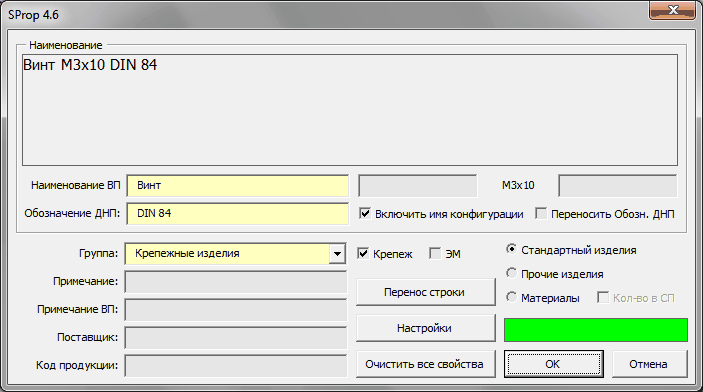
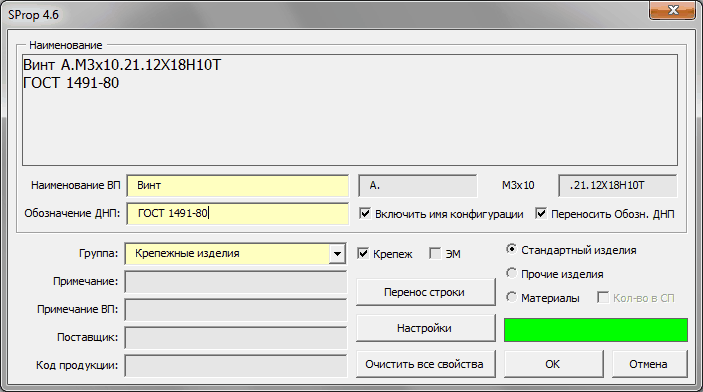
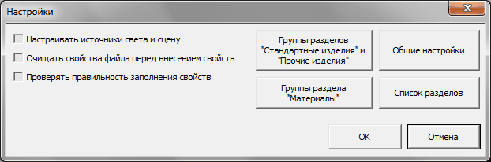
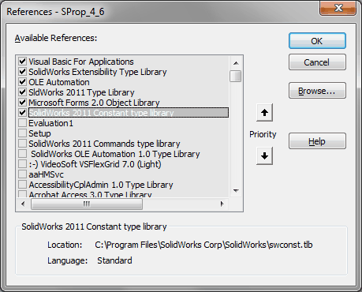

Макрос SProp |
Top Previous Next |
|
Предназначен для заполнения свойств моделей (сборок и деталей) относящихся к разделам Стандартные изделия, Прочие изделия и Материалы. Свойства используются для отображения в спецификации и ведомости покупных. Обязательными полями для заполнения являются Наименование ВП, Обозначение ДНП и Группа. Если изделие имеет несколько конфигураций, Например, винт с конфигурациями M3x6, M3x8 и т.д., то можно сильно облегчить задачу по заполнению свойств, если поставить флажок «Включить имя конфигурации». Тогда при нажатии ОК свойства пропишутся для всех конфигураций. Если все свойства были заполнены правильно, то при повторном запуске макроса горит зеленый индикатор. Для правильной сортировки стандартных изделий в спецификации необходимо, что в их наименовании было только 3 пробела, разделяющие название, типоразмер, наименование стандарта и номер стандарта. Например, Винт М3х6 ГОСТ 1491-80. Для ГОСТ Р сделано исключение, в этом случае пробелов 4.

qСтандартные изделия, Прочие изделия, Материалы - группа переключателей, с помощью которой необходимо выбрать раздел. qНаименование - показывает текстовую информацию, которая будет отображена в спецификации в графе наименование. qНаименование ВП - указывается наименование и типоразмер изделия в соответствии с обозначением, установленным в документе на поставку. Соотвествует графе Наименование ведомости покупных. qОбозначение ДНП - указывается ГОСТ, ТУ или любой другой стандарт. Так же допускается ставить номер по каталогу или артикульный номер. qГруппа - вызывает выпадающий список, в котором, в зависимости от выбранного раздела, отображена информация либо из файла SpecEditor\SpecEditor_Groups.txt, либо из SpecEditor\SpecEditor_MaterialGroups.txt. qПримечание - указывают дополнительные данные. Будет отображено в примечаниях в спецификации. qПримечание ВП - указывают дополнительные данные, например, единицы измерения (если записываемые изделия измеряются не в штуках). Будет отображено в примечании в ведомости покупных. qПоставщик - указывают наименование (адрес) предприятия-поставщика. qКод продукции - указывают код продукции по классификатору продукции страны - разработчика конструкторской документации. Коды покупных изделий по классификаторам продукции других стран не указывают. qВключить имя конфигурации - В графе наименование будут отображены данные, взятые из конфигурации. Так же можно дописать текстовую информацию до и после имени конфигурации 
qПереносить обозначение ДНП - для длинных наименований в спецификации возможно сделать двустрочную запись, где обозначение документа на поставку будет перенесено на вторую строку. qКрепеж - отмечает модель как крепеж. qЭМ - устанавливается при электромонтаже. qКол-во в СП - доступно только для материалов. Позволяет задавать в качестве количества в спецификации величину, указанную в свойстве "Количество". Свойство "Количество" необходимо заполнить самостоятельно на вкладке Настройка или Конфигурации в окне Суммарная информация программы SW. Например можно сослаться на массу модели. qПеренос строки - добавляет перенос строки в текст Наименования. qНастройки - вызывает окно настроек (см. ниже) qОчистить все свойства - удаляет всю информацию из вкладок Суммарная информация, Настройки и Конфигурации. qОк - запись изменений в свойства файла модели и закрытие окна макроса. qОтмена - закрыть окно макроса без сохранения изменений.

Настройки сохраняются в файле SProp\SProp.ini.
qНастраивать источники света и сцену - При внесении свойств также будут настроены сцена и источники освещения. Это сделано, чтобы унифицировать освещение для вновь создаваемых и уже имеющихся в наличии файлов. qОчищать свойства файла перед внесением свойств - при установленном флажке перед внесением свойств будет очищаться вся информация с вкадок Суммарная информация, Настройки и Конфигурации. Исключение составляет только свойство "Количество". qПроверять правильность заполнения свойств - включает/отключает проверку количества и правильности заполнения свойств модели. qГруппы разделов "Стандартные изделия" и "Прочие изделия" - редактирование файла SpecEditor\SpecEditor_Groups.txt со списком групп разделов "Стандартные изделия" и "Прочие изделия". qГруппы раздела "Материалы" - редактирование файла SpecEditor\SpecEditor_MaterialGroups.txt со списком групп раздела "Материалы". qОбщие настройки - вызов окна Общие настройки (см. пункт Установка и настройка) qСписок разделов - редактирование файла SpecEditor\SpecEditor_Sections.txt со списком разделов спецификации. qОк - сохранение изменений в ini файл. qОтмена - выход без сохранения изменений.
Если все нужные для спецификации или ведомости покупных свойства заполнены, то красный индикатор станет зеленым.
Библиотеки:  |